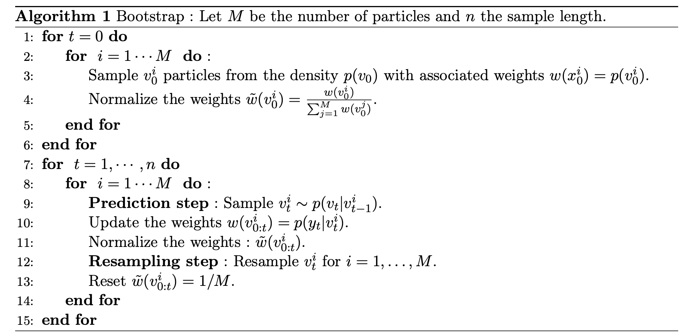
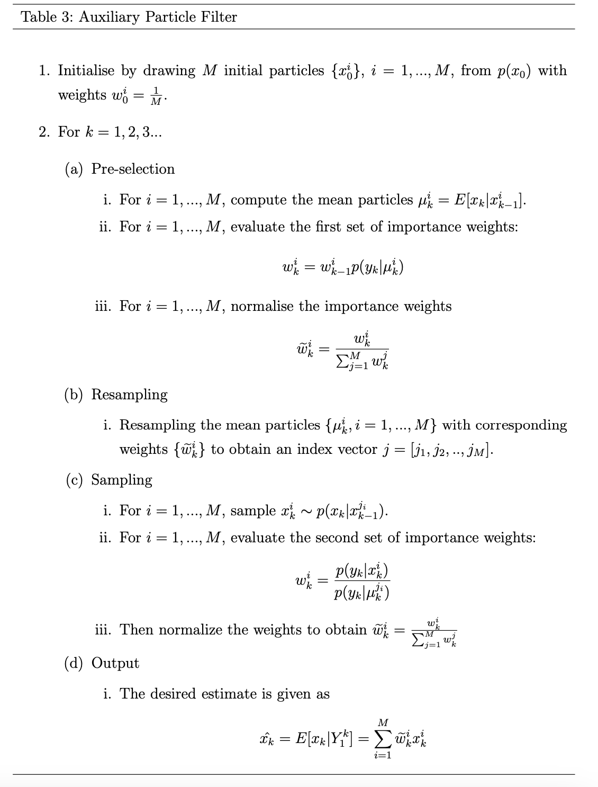

Calibration du modèle de Heston par filtrage particulaire
Filtre bootstrap et auxiliary particle filter sur prix d’options
Vue d’ensemble
Dans le modèle de Heston, la variance instantanée \(v_t\) est un processus stochastique non observable : seuls les prix du sous-jacent et des options sont visibles. Calibrer le modèle revient donc à résoudre simultanément deux problèmes — estimer un état caché et estimer les paramètres qui gouvernent sa dynamique.
Ce projet traite le problème par filtrage particulaire. Il implémente le filtre bootstrap et l’auxiliary particle filter (APF) sur le modèle de Heston discrétisé, puis conduit une étude de simulation comparant les deux filtres selon la moneyness des options utilisées comme observations : à la monnaie (ATM), dans la monnaie (ITM) et en portefeuille mixte.
Contexte financier
Le modèle de Black-Scholes suppose une volatilité constante, ce que le smile de volatilité implicite contredit directement. Le modèle de Heston introduit une variance stochastique à retour à la moyenne, corrélée au rendement du sous-jacent, ce qui lui permet de reproduire à la fois le smile et son asymétrie.
Son adoption en salle de marché pose toutefois une question pratique : comment estimer un état non observé à partir de prix bruités, et avec quelle précision selon les instruments retenus pour la calibration ? La réponse conditionne directement la qualité du hedging en vega et la valorisation des produits exotiques sensibles à la dynamique de volatilité.
Méthodologie
1. Pricing de référence. Prix du call européen sous Heston par la forme semi-analytique (fonction caractéristique), puis contrôle par Monte-Carlo avec schéma d’Euler sur le système couplé prix / variance.
2. Modèle espace-état. Le modèle de Heston discrétisé est réécrit sous forme d’un modèle à espace d’états : la variance instantanée constitue l’état caché, le prix d’option observé constitue l’observation bruitée.
3. Filtrage. Deux filtres particulaires sont implémentés :
- le filtre bootstrap, qui propage les particules selon la densité de transition puis les repondère par la vraisemblance d’observation ;
- l’auxiliary particle filter, qui introduit une étape de présélection des particules en fonction de leur compatibilité anticipée avec l’observation suivante, afin de limiter la dégénérescence des poids.
Une variante modifiée de l’APF est également testée.
4. Étude de simulation. Les deux filtres sont comparés sur des jeux de données simulés, pour trois configurations d’options : \(K = S\) (ATM), \(K = 0{,}95\,S\) et un portefeuille mixte mêlant options dans et hors de la monnaie. La comparaison est menée en erreur quadratique moyenne sur la trajectoire de variance reconstituée.
Cadre mathématique
Dynamique de Heston. Sous la probabilité risque-neutre, \[ \begin{cases} \mathrm{d}S_s = S_s\left( r\,\mathrm{d}s + \sqrt{v_s}\,\mathrm{d}W_s^1 \right) \\[2pt] \mathrm{d}v_s = \kappa(\beta - v_s)\,\mathrm{d}s + \sigma \sqrt{v_s}\,\mathrm{d}W_s^2 \\[2pt] \mathrm{d}W_s^1\,\mathrm{d}W_s^2 = \rho\,\mathrm{d}s \end{cases} \] où \(\kappa > 0\) est la vitesse de retour à la moyenne, \(\beta > 0\) le niveau de variance de long terme, \(\sigma\) la volatilité de la variance et \(\rho \in [-1,1]\) la corrélation entre les deux browniens. La variance suit le processus de Cox-Ingersoll-Ross introduit en 1985 pour les taux courts ; la condition de Feller \(2\kappa\beta > \sigma^2\) garantit sa stricte positivité.
Densité de transition exacte. Le processus CIR admet une densité de transition non centrée du chi-deux : \[ p(v_t \mid v_{t-1}) = 2c\,\chi^2\!\left(2c\,v_t;\; 2q + 2;\; 2c\,e^{-\kappa \Delta} v_{t-1}\right), \] avec \[ c = \frac{2\kappa}{\sigma^2\left(1 - e^{-\kappa \Delta}\right)}, \qquad q = \frac{2\kappa\beta}{\sigma^2} - 1 . \] Simuler directement selon cette loi évite le biais de discrétisation du schéma d’Euler, en particulier lorsque la variance s’approche de zéro.
Filtrage particulaire. Le filtre bootstrap approche la loi filtrée \(p(v_t \mid y_{1:t})\) par un système de particules pondérées \(\{v_t^{(i)}, w_t^{(i)}\}_{i=1}^M\) : \[ v_t^{(i)} \sim p\bigl(v_t \mid v_{t-1}^{(i)}\bigr), \qquad w_t^{(i)} \propto w_{t-1}^{(i)}\, p\bigl(y_t \mid v_t^{(i)}\bigr). \] L’APF modifie l’échantillonnage en introduisant une variable auxiliaire \(k\) qui présélectionne les particules selon \[ p\bigl(k,\, v_t \mid y_{1:t}\bigr) \;\propto\; p\bigl(y_t \mid \mu_t^{(k)}\bigr)\, w_{t-1}^{(k)}\, p\bigl(v_t \mid v_{t-1}^{(k)}\bigr), \] où \(\mu_t^{(k)}\) est une valeur représentative (moyenne ou mode) de la loi de transition issue de la particule \(k\). Cette anticipation réduit la variance des poids lorsque la vraisemblance d’observation est très informative.
Dégénérescence. Le rééchantillonnage est déclenché sur la taille effective d’échantillon \[ \mathrm{ESS}_t = \Bigl(\textstyle\sum_{i=1}^M (w_t^{(i)})^2\Bigr)^{-1}. \]
Données
Séries simulées sous le modèle de Heston avec des paramètres fixés, ce qui permet de disposer de la trajectoire de variance vraie et donc de mesurer objectivement l’erreur de filtrage — ce qui serait impossible sur données réelles. Le volet calibration sur prix d’options observés s’appuie sur les données de marché conservées dans 3A/proc_stochastique/data/.
Implémentation
Le module heston.py regroupe :
heston(...)— prix de call européen sous Heston ;SimHeston(...)— simulation conjointe prix / variance ;Bootstrap_Heston(...)— filtre bootstrap ;APF(...)etAPF_modified(...)— auxiliary particle filter et sa variante ;resample_particles(...)— étape de rééchantillonnage.
L’étude de simulation comparative est menée en R, avec la fonction de pricing Heston_Call_Function.R et les résultats sérialisés dans 3A/proc_stochastique/results_sim/ (configurations ATM, ITM et mixte).
Résultats
Les trajectoires filtrées, les superpositions avec l’état vrai et les erreurs quadratiques moyennes par configuration sont présentées dans les documents suivants :
Consulter le notebook de calibration
Étude de simulation — performance du filtre APF
Pricing et calibration du modèle de Heston


Interprétation
L’intérêt de l’APF est conditionnel, et l’étude de simulation sert précisément à identifier ce conditionnement. Lorsque la vraisemblance d’observation est très piquée — options à la monnaie, dont le prix réagit fortement à la variance — le filtre bootstrap gaspille des particules dans des régions incompatibles avec l’observation, et la présélection de l’APF apporte un gain net. Lorsque l’observation est peu informative sur la variance, l’avantage se réduit et le surcoût algorithmique de l’APF n’est plus justifié.
Le choix des instruments de calibration n’est donc pas neutre : il détermine l’information disponible sur l’état caché autant que l’algorithme employé pour l’extraire.
Limites et risque de modèle
- Paramètres supposés connus. L’étude de filtrage suppose les paramètres \((\kappa, \beta, \sigma, \rho)\) fixés ; l’estimation jointe état-paramètres est un problème sensiblement plus difficile.
- Discrétisation. Le schéma d’Euler sur le processus CIR peut produire des variances négatives ; l’usage de la loi de transition exacte est préférable mais plus coûteux.
- Dégénérescence des poids. Elle croît avec l’horizon et avec la dimension de l’état ; le rééchantillonnage la retarde sans la supprimer.
- Données simulées. Les performances mesurées sur données simulées sont optimistes par rapport à un cadre réel où le modèle est mal spécifié.
- Condition de Feller. Sa violation dégrade fortement le comportement numérique des filtres au voisinage de zéro.
Technologies
Ressources
- Consulter le notebook de calibration
- Voir le code source du module
heston.py - Étude de simulation — filtre APF
- Pricing et calibration du modèle de Heston
- Projet connexe : Volatilité stochastique de Taylor — Kalman et filtrage particulaire
- Projet connexe : Pricing d’options exotiques sous Heston, Bates et CIR